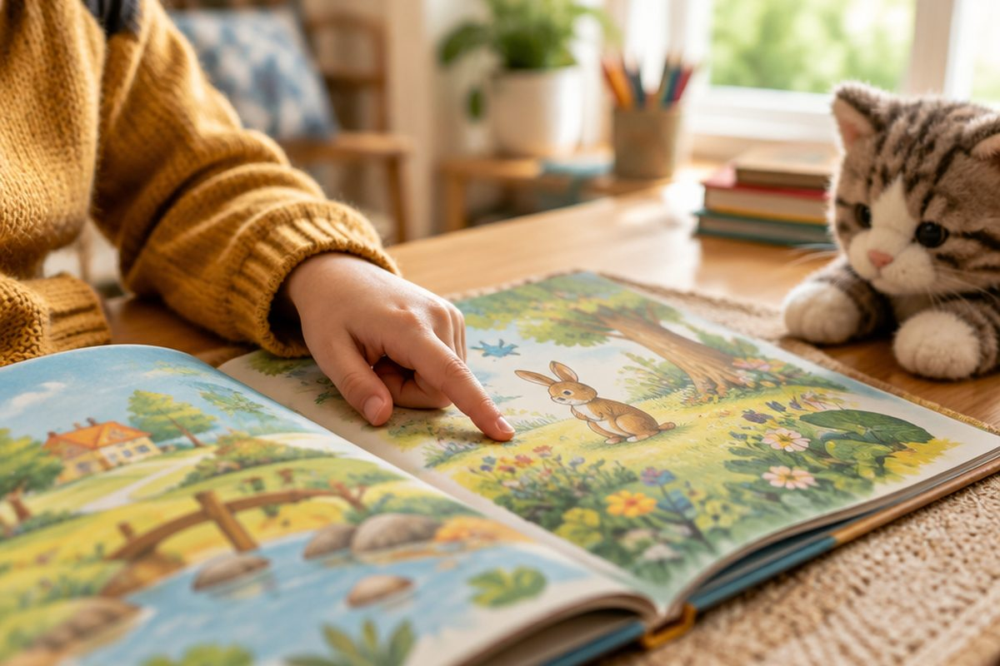

전체 단원 › 1학년 › 영어 › 2단계 · 자주 보는 낱말 (I, you, the, a)
I, you, the, a — 책에 자꾸 나오는 낱말은 뭘까?

영어 책을 펴면 자꾸 보이는 낱말이 있어요. 눈으로 보자마자 읽어 봐요.
자주 보는 낱말이 있어요
책에 같은 낱말이 자꾸 나와요.
I, you, the, a 예요.
보자마자 바로 읽어요.
I · you · the · a
I는 나, you는 너
I는 '나'예요.
I는 언제나 대문자로 써요.
you는 '너'예요.
I like you. 나는 너를 좋아해.
a는 하나, the는 그
a는 '하나'라는 뜻이에요.
a cat 은 고양이 한 마리예요.
the는 '그'예요. 다 아는 것에 써요.
a dog 개 한 마리 · the sun 해
문장으로 읽어요
I see는 '나는 ~을 봐요'예요.
뒤의 낱말만 바꿔 읽어요.
I see a cat. · I see the sun. · I see you.
핵심 낱말
- I
- 나. 언제나 대문자로 써요.
- you
- 너
- a
- 하나의 (a cat 고양이 한 마리)
- the
- 그 (다 아는 것 앞에 써요)
꼭 알아야 할 표현
| I | 나 🙋 | 아이. 언제나 대문자 |
| you | 너 👉 | 유 |
| the | 그 | 더 |
| a | 하나의 | 어. 낱말 앞에서 짧게 |
| a cat | 🐱 고양이 한 마리 | |
| the sun | ☀️ 해 | |
| I see a dog. | 나는 개 한 마리를 봐요. 🐶 | |
| I see the sun. | 나는 해를 봐요. ☀️ | |
| I see you. | 나는 너를 봐요. 👀 | |
| I like you. | 나는 너를 좋아해요. 💛 | |
| you and I | 너와 나 |
한 줄 정리
- I는 '나', you는 '너'예요.
- a는 '하나의', the는 '그'예요.
- I는 언제나 대문자로 써요.
학교 교육과정 연결 (미리 배우기)
- [4영01-04] 소리와 철자의 관계를 이해하며 쉽고 간단한 단어, 어구, 문장을 소리 내어 읽는다.
- [4영01-05] 쉽고 간단한 단어, 어구, 문장의 의미를 이해한다.